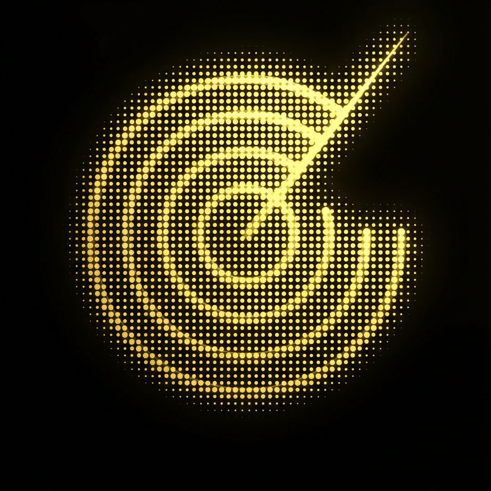

Raised Chipped Radar
3D coinPremium medallion treatment. The source silhouette stays intact while the plate gives it real icon weight.
This pass keeps the existing chipped radar insignia intact. No added letters, no invented monogram, no generic target redraw.
frontend/public/fintheon-logo.png

The mark is a damaged radar disk: concentric rings with a broken right side, separated right-side arc fragments, a dot-screen body, and a signal vector launching through the break. The previews below preserve that silhouette by using the source insignia as the mark layer, then only changing material and presentation.
Same insignia, different material systems.
Premium medallion treatment. The source silhouette stays intact while the plate gives it real icon weight.
Desktop/mobile app icon candidate: rounded dark glass tile, gold edge, unchanged chipped radar mark.
A lighter polished lens. Keeps the chipped ring mass but makes the glow feel less smoky.
The only true isometric pass in this sheet: the full chipped radar is lifted onto a tilted instrument plate.
Darker, less glowy, more machined. Good if the current mark feels too neon.
Same tile family, but more restrained and less luminous for production UI chrome.
Flat production direction: no fake depth, just a tighter high-contrast treatment of the existing radar.
Small-size candidate. Crops the glow back so the chipped radar reads before the atmosphere does.